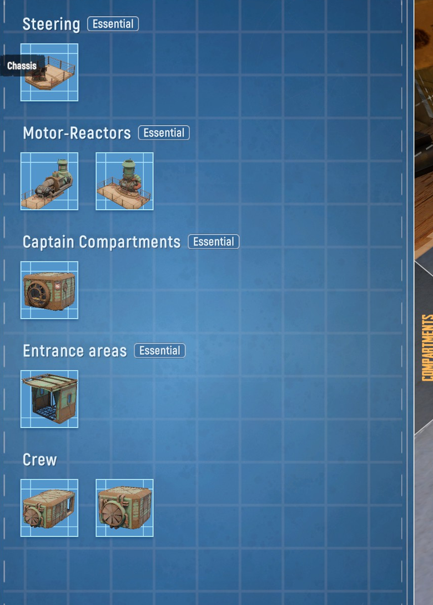
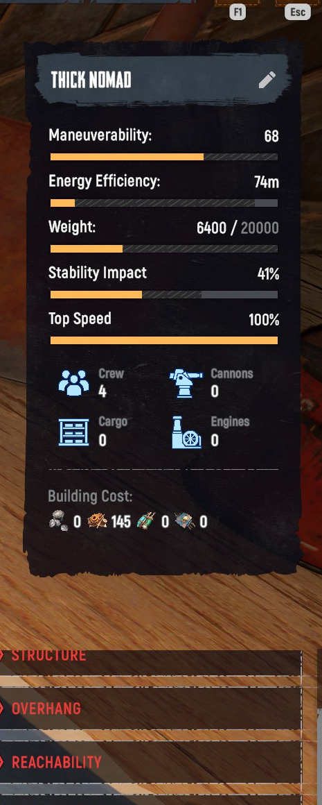

에디터 한눈에
모선(ORBIT) → BLUEPRINTS → 새 설계 또는 기성 설계도 편집. 빈 섀시에서 구획을 쌓아 올립니다.

- 1좌측 — 구획 라이브러리(Tab): 카테고리별 부품을 골라 배치.
- 2가운데 — 빌드 영역: 섀시 위에 구획·갑판을 조립(다리·덱·대포·화물칸).
- 3우측 — 스탯 패널: 기동성·에너지효율·무게·안정성·최고속도 + Crew/Cannons/Cargo/Engines + 제작비.
- 4우하단 — 검증 경고: STRUCTURE·OVERHANG·REACHABILITY·UTILITY (빨강 = 미충족, 출격 불가).
| 에디터 조작키 | |
|---|---|
| Tab | 구획 라이브러리 열기/이동 |
| R / F | 층(floor) 전환 |
| G | 윗층 구획 숨기기(내부 보기) |
| T | 문(door) 연결 편집 |
| Q / E | 카메라 회전 |
필수 구획 5종
이게 없으면 트램플러가 작동하지 않습니다. 라이브러리에서 Essential 표시가 붙은 것들.
섀시 Chassis 필수
걷는 기반 골격. 크기가 무게 한도와 구획 수용량을 정합니다. 모든 빌드의 출발점.
조향 Steering 필수
조종대(Control Panel)가 들어 있는 칸. 없으면 운전 불가.
모터-리액터 Motor-Reactor 필수
동력원(심장). 에너지 로드로 가동. 적의 1순위 표적이라 안쪽 깊숙이 배치.
선장실 Captain Compartment 필수
부활 침대 + 나포 장치가 있는 칸. 파괴되면 리스폰 거점을 잃습니다.
입구 Entrance 필수
사다리로 갑판에 오르는 탑승 경로. 내부 동선의 시작점.
승무원실 Crew Room
침대 수 = 수용 인원. 6인 풀스쿼드를 노린다면 크루룸을 충분히. 보딩 후 재탈환에도 유리.

구획 카테고리
좌측 세로 탭으로 카테고리를 전환합니다.
필수 Essentials
섀시·조향·리액터·선장실·입구·크루 등 작동에 반드시 필요한 칸.
유틸리티 Utility
삽·메드킷·연막탄 등 도구류와 보조 칸.
전투 Combat
대포(40/70/80mm)·포 갑판·장갑·돌파장비 등 화력·방어.
갑판·프레임 Decks & Frames
층을 쌓는 구조물. 해치 프레임 위에 새 갑판을 올려 다층 구성. 돌출 지지용으로도 필수.
발코니 Balconies
구획 주변 이동을 돕는 가벼운 통로. 동선 개선용(약함).
화물 Cargo
화물 갑판·적재고·화물칸. 전리품을 안전하게 보관(추출 인정 위치).
스탯 읽는 법
| 스탯 | 의미 (인게임 표기 해석) |
|---|---|
| 기동성 Maneuverability | 회전·민첩성. 높을수록 잘 돌고 빠르게 대응. 무게가 늘면 떨어짐. |
| 에너지 효율 Energy Efficiency | 같은 연료로 더 멀리/오래 주행. 높을수록 에너지 로드가 오래 감. |
| 무게 Weight | 현재 무게 / 섀시 한도(예: 6400 / 20000). 한도를 넘으면 빌드 불가. 무거울수록 느려짐. |
| 안정성 Stability Impact | 지형·반동에 흔들리는 정도. 무게 분포·중심과 관련. |
| 최고 속도 Top Speed | 상대값(%). 100%가 기준. 엔진/무게가 영향. |
| Crew / Cannons / Cargo / Engines | 각각 수용 승무원·장착 대포·화물칸·엔진 개수. |
| 제작비 Building Cost | 이 설계를 실제로 짓는 비용 — 크라운 + 재료(예: 크라운 145 + …). |

무게 vs 기동성. 장갑·대포·화물을 더 얹을수록 튼튼하고 화력은 세지만 무게↑ → 기동성·속도↓. 솔로는 과적(overbuild) 금지 — 도망칠 속도가 생존입니다.
빌드 검증 규칙
우하단 경고가 모두 충족(초록)이어야 출격할 수 있습니다. 빨강이면 그 항목을 고쳐야 해요.
구조 Structure
모든 칸이 서로 연결·지지돼야 함. 떠 있거나 끊긴 조각이 있으면 실패 → 프레임/갑판으로 이어 붙이기.
돌출 Overhang
받쳐주는 구조 없이 너무 튀어나온 칸은 불가. 아래에 지지 프레임을 깔아 받치세요.
도달성 Reachability
승무원이 입구→복도·계단으로 모든 칸에 걸어갈 수 있어야 함. 고립된 방은 복도/사다리로 연결.
유틸리티 구획 Utility Compartments
필요한 유틸리티/필수 칸이 빠졌을 때 경고. 누락된 카테고리(예: 크루룸·저장 등)를 채우면 해제.
검증 규칙의 정확한 판정 기준은 인게임 표기 해석입니다(EA — 변동 가능). 경고를 클릭하면 보통 문제 위치가 강조됩니다.
빌드 원형 & 팁
솔로 정찰형
가벼운 섀시 + 최소 구획 + 1~2 대포. 기동성·속도 우선. 조타·리액터·대포를 가까이 모아 혼자 다 관리. 부서져도 싸게 재건.
화물 운반형
중·대형 섀시 + 화물칸 多. 약탈 효율 최고지만 느리고 표적이 큼. 호위(크루)와 함께.
전투 요새형
장갑·대포 중무장 + 크루룸 多. 거점 방어·교전에 강함. 대신 매우 느림 — 폭풍 탈주엔 불리.
- 리액터·저장고는 중앙 깊숙이, 외곽엔 더미 칸·장갑으로 완충. 리액터를 후미에 두지 말 것.
- 멀티 침대 크루룸이면 보딩당해도 재탈환·재스폰이 강함.
- 자원의 40% 이상 한 대에 몰빵 금지 — 예비 1~2대를 싸게 굴리면 한 번 잃어도 회복 빠름. (커뮤니티 권장)
- 좋은 설계는 블루프린트로 저장 → 부서져도 즉시 재건. 설계도는 계정 전체 공유.
초보 추천: 가볍고 싼 중형으로 시작하세요. 커뮤니티에서 자주 거론되는 Grumpy Walker 류(제작비 ≈ 300크라운대, Crew 3·Cannons 2)가 무난합니다. 기성 설계도(예: Nervous Bug / Dusty Sentinel / Stoic Pilgrim)도 좋은 출발점.